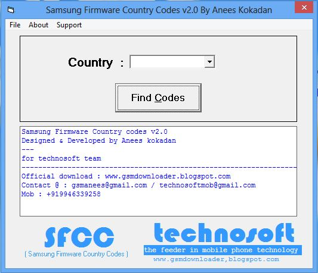
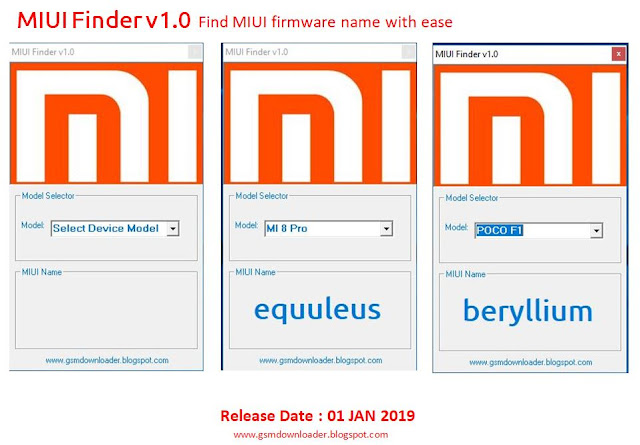
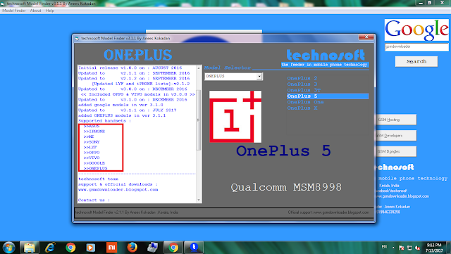
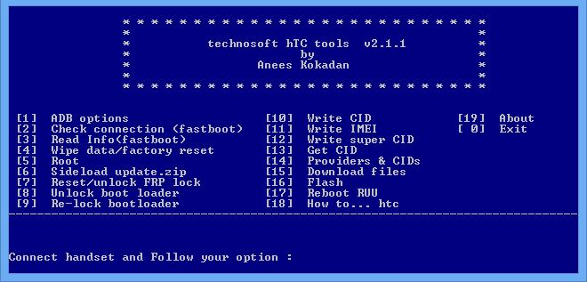
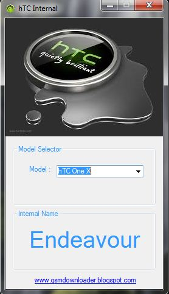

Anees Kokadan - Portfolio

Professional Summary
Experienced Smartphone Service Engineer with over 11 years of vast and diversified experience. Skilled at Smartphone technology training, greeting customers, checking warranty documents, asking customers about malfunctions, diagnosing technical problems, ordering replacement parts, performing repairs, updating mobile phone software, and writing service reports. Proven history of successful execution in complex, multi-faceted, highly competitive environments. Looking forward to leveraging my strong creative thinking, preventive maintenance, client relationship management, customer service, smartphone software troubleshooting, communication systems, technical support, hardware, electronics equipment, software repair & flashing, schematic diagrams and collaboration skills to exceed organizational goals.
Key Achievements
- Senior Technician Membership – Institution of Engineers India IEI (Membership No: ST718740-3)
- My Online Unlocking website: lockexit.com | Admin at lockexit.com.
- My personal website: aneeskokadan.com
- My blog: gsmdownloader.blogspot.com
Professional Experience
Odox Institute of Technologies [Jan 2022– Present]
HOD / Trainer in Smartphone Technology / Software in Charge
- Performed as the Head of trainers and faculty by managing and providing syllabus updations and keeping day to day technical reports etc
- Provided advance level smartphone engineering software classes to the students (both freshers and updation course students)
- Handled hardware basic electronics, SMD, and Schematics level tracing classes
- Managed Company website odox.in and odoxinstitute.com
- Managed company technical email address odoxtechnical@gmail.com
- Involved in syllabus updation meeting time to time according to the updations in the market and executed syllabus updations
- Managed as software handsets and tools register and implemented digital entering and delivering system with google sheets for handsets and tools delivery, which is more helpful to identify the tools or handsets status
- implemented digital ODDS (Odox Day to Day Sheet) system by Google sheet, by which every trainer can enter their day to day classes and covered syllabus details from their mobile phone which can be viewed by all staff and managers (entry permission to only HOD and class tutor)
- Updated the syllabus by new tools and software boxes in the market
- Conducted technical training programs to the trainers according to the new technology advancements in the smartphone technology field.
- Trained the faculties with advance level software concepts and updations
- Handled advanced level software troubleshooting from another service centers by the reference by their technical team
Britco & Bridco LLC
[Sep 2017 – Nov 2021]
Smartphone Service Engineer / Technology Trainer
- Performed as technical trainer in smartphone technology to the students from various countries such as African, and Asian Countries (Eritrea,Kenya, Pakistan, Bangladesh, India, Afghanistan, Sri Lanka, Saudi Arabia )
- Conducted training program for Public by KMCC Dubai in collaboration with Britco Dubai
- Corresponded with maintenance and repairing of mobile phones and electronic devices.
- Involved in smartphone software repairing, maintenance and troubleshooting job.
- Facilitated to greet the walk-in customers and listen to their complaints regarding the malfunctioning of their phones.
- Formulated to examine the mobiles phones to identify the cause of trouble.
- Provided the customers with a cost estimate and a tentative date to conclude the repair work.
- Performed to open up the mobile phone and check the battery life, wirings and connections, screens and other components for efficiency.
- Worked in the software department which solves smartphone related software problems, software repairing, flashing, troubleshooting, unlocking etc.
- Experience with service center manager software (serveeazy – software which we use to manage job entry, report and job delivery in our smartphone service centre).
- Experience with various types of software for unlocking (frp-huawei id- network lock- iCloud lock).
- Diagnose the defective phones and identify the root cause of the problem.
- Worked with circuit schematics diagrams and SMD refixing.
- Make certain the different software downloaded on the cell phones are compatible with it.
- Repaired the damages caused to the phone due to contact with water, heat and light.
- Experienced bulk number of handsets complaints troubleshooting with systematic and in short time in Dubai Market
- Managed service center in Britco Dubai by generating and keeping technicians day to day performance report from entry software
Britco & Bridco [Jun 2013 – Aug 2017]
Technology Trainer
- Performed as Smartphone technology trainer
- Corresponded to devise technical training programs according to organizational requirements.
- Facilitated to prepare training material (presentations, worksheets etc.).
- Executed training sessions, webinars, workshops etc. in groups or individually.
- Collaborated to keep and report data on completed courses, absences, issues etc.
- Observed and evaluated results of training programs.
- Determined overall effectiveness of programs and make improvements.
- Identified the role of computers in employees’ day-to-day work.
- Formulated and distributed skills alignment tests to establish a baseline for each employee.
- Coordinated with detecting common skills shortages and creating a training plan to address these.
- Prepared requisite manuals and handouts ahead of training sessions.
- Conducted training to promote employees’ computer skills.
Technical Skills
- Smartphone software repairing expert.
- Apple iPhone, iPad, I watch software repairing experts.
- All smartphone software related problems troubleshooting.
- Working with unlocking servers.
- Online software repairing.
- Dubai based Smartphone software trainer.
- Software boxes and dongles.
- Programming in C++, VB.
- Experience in Easyjtag Plus, MIPI box, UFI box, V1s pro and other android and iphone Memory programming boxes
- professional knowledge and experience in schematics software like ZXW, WUZINJI, Borneo, DZKJ, Pragma fix and JCDraw and other schematics software
- Website managing in godaddy website builder
- Eligible to handle Technical classes in English, Hindi and Malayalam
Education
- Diploma in Electronics and Communication Engineering from Government Polytechnic College [2010-2013] – Thirurangadi, Kerala, India.
- Higher Secondary (+2 computer science) from PPMHSS Kottukkara, Malappuram
- SSLC from SOHS Areekode
Projects
- FCC- Firmware Country Codes (Software to find country of a firmware)

- MIUI Finder

-
Technosoft Model Finder

-
Technosoft hTC Tool

-
hTC Internal
